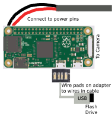

iSec Capture is a
Raspberry Pi security camera connected to the internet. It is housed
in a dummy security camera.

Here is a materials list:
- 1x Raspberry Pi Zero
v1.3 or Pi Zero W. The Pi Zero W will make the build much easier,
but I stuck with a Pi Zero 1.3 because I already had all the parts.
- 1x USB hub (if not
using Zero W). The best option is a person shaped hub, with limbs
being USB ports on wires. I got mine from Target.
- 1x MicroSD card, preferably 8gb. Make sure it is a reputable brand and will fit an OS! I like this one.
- 1x USB cable. The type doesn't matter, as long as one end is a USB plug. This one is a good length, a good price, and has thick power wires.
- 1x USB power
brick. Ideally it would supply 2 amps. I am using a Kindle Fire
charger.
- 1x Raspberry Pi
Camera. The version doesn't matter. I am using the old camera.
- 1x Pi Zero
camera cable adapter. I got mine from Adafruit.
- 1x Fake security camera. I can't find the one I used on Amazon. If it helps, my camera had a battery compartment, and made noises when it detected motion, like "Intruder Alert! You have entered a no-trespassing zone! Do not touch anything!"
- 1x WiFi dongle (if not using Zero W). I recommend this one because it has no casing and is cheap. It is intended for the "pcduino" dev board, but I have tested it and it works with Raspberry Pi.
- 1x Tiny USB flash drive. I am using this one. This one is USB 3.0, but that doesn't matter. The drive should be fairly large (in storage).
- 1x USB-microUSB mini adapter, such as this one.
- 1x USB port (if using Zero W)
- Some
Blue-Tac.
- Soldering. We need some way to put the electronics together!
- Dremeling. The dummy
security cameras have all sorts of supports that will get in the way
of our electronics.
- Basic Raspberry Pi
skills. You need to be able to set up a Pi, put it on a wifi
network, and a few other Linux things.
- 3d printing. You may 3d print the camera module cover. I will not supply the file because of the wide variety of different models of cameras, but if you really need it, contact me by going to "Old site" and fill out the form.
I won't be going into detail on how to construct this because I didn't take pictures when I made it and because the construction varies depending on what fake camera you use, but it is fairly simple. Here's a diagram for Pi Zero 1.3:
Here's one for the Pi Zero W:

Here's the finished product:

After this, I installed the software. I chose to use RPi Cam Web Interface. It allows for software motion detection, which makes it great for a security camera! Follow the instructions in the link to install it. Once you get it set up, go to hostname.local/html in your browser to see a live feed of the footage! If your motion detection is not working, change the setting "Motion detect mode" to "internal".
However, we still need to set up the flash drive. I haven't gotten around to doing that yet, but Raspberry Pi forum member btidey contributed this excellent advice:
"http://elinux.org/RPi_Adding_USB_Drives gives a good general introduction to mounting external usb drives and you should be using the fstab method so it gets mounted on every boot.
If you have just the one USB flash then you can use the simpler method else you will need to use the UUID method as described.
The mount point directory needs to be the media folder for the camera e.g./var/www/html/media
sudo chown www-data:www-data folderis the command used to change ownership of a folder."